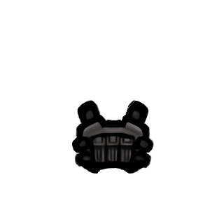

魅狐防弹甲Kurin_Middle_Body_Armor

Kurin/Apparel/Middle/Body_Armor/Texture
—
轻巧防弹衣。穿着轻便舒适，适合日常使用，但是防御能力有些不足。
本片：魅狐防弹甲
Kurin_Middle_Body_Armor
Kurin/Apparel/Middle/Body_Armor/Texture
—
轻巧防弹衣。穿着轻便舒适，适合日常使用，但是防御能力有些不足。